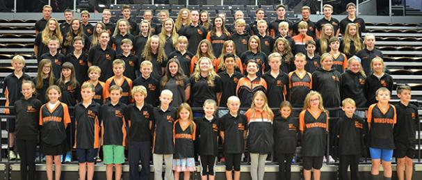
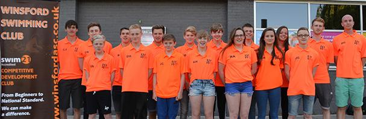

Welcome to the official website for the Winsford Swimming Club. Here you will find all you need from our swimming lessons, squad training schedules, open meets, all about us to club news. Get in touch by visiting our contacts page and one of our volunteers will be only to willing to help with your enquiry.

Whats NEW?
30 AUG - CLUB PHOTO
The annual club photo for all Juggernaut, Platinum, Gold, Silver and transition swimmers and all coaches will take place on Tuesday 8th September 6pm in the Hall. The photos will consist of a whole club and separate squad photos. This is the only whole club photo of the year so please try and attend as this picture will have a permanent place on the front page of our web-site and hopefully in the newspaper. Can all swimmers please wear fluorescent orange polo or T Shirt. Any swimmer who does not own a orange top please wear an alternative Winsford top. Thanks Dan.
30 AUG - WEBSITE VOLUNTEER NEEDED
AS Neil is stepping down from doing the website for the past years, if there is anyone who would like to take this over, please contact Helen or Barry.
30 AUG - HEAD COACH MESSAGE
see news page
23 AUG - TRAINING REMINDER / BANK HOLIDAY
From Monday 24th all training is back to normal, except for: Tuesday 25th No Land Training
Sunday 30th 4:30-6:30pm Juggernaut, 6:30-7:30pm Platinum & Development
Monday 31st Bank Holiday, training for Juggernaut and Platinum 7-9am
23 AUG - END OF SEASON MESSAGE
As the 2014-2015 Season has now finished it is a chance for me to take a step back and reflect on what has been an absolutely incredible year for our Club and our Swimmers. Swimming seasons are long, very long, in fact I can't think of any other sport where there is so much time and effort put into training and competing over such a long period. Other sports have it very easy compared to us, but I wouldn't want it any other way. It has been one exciting thrill ride of a season and I see the season as riding the nemesis at Alton Towers but instead of going round once and then getting off and buying a hot dog, we go round and round constantly for 11 months and you can't get off! The season like all roller coasters have ups and downs and it has twists and turns, it sometimes makes you sick, it sometimes makes you smile, it sometimes makes you want to scream but all roller coasters are exciting and that is what this season has been, very exciting. The results have been incredible: 8th in Arena NW Premier League, Most Improved Age group Club at the Cheshire County Champs for the second year running, Record number of swimmers achieving County Qualifying Times (55), Record number of NW Regional Qualifiers (35), Record number of National Qualifiers (12 Individual + 4 Relay = 16 Total). Not only this but we have won the Crusader League, won numerous top club awards and all swimmers have excelled in their training and racing. I often say to a swimmer "Your Success is down to you" and it is, us coaches help out a bit and support you through thick and thin, through the good times and the bad but at the end of the day it is you who gets out of bed at 4am, it is you who ploughs up and down metre after metre, day after day, week after week, month after month, year after year, it is your commitment which has got you where you are now. It is you who has listened, focused and practiced what is taught you. You only achieve through hard work and dedication, anything is possible for those who believe and work hard. I can honestly say we have got some incredibly focused, hard working swimmers, swimmers who want to achieve and want to be the best they can be. It has been a real joy to coach you all in our training sessions and in our racing.
As the season has now ended we can get off the roller coaster and take a bit of time to eat our hot dogs but trust me when September arrives I know you will all get back on with me, and trust me the roller coaster will be even bigger, faster and even more exciting next season. How are we going to topple this seasons achievements?! I will think about that one whilst sitting on the beach with my diet Pepsi and bag of chips! But I can't wait for the new season and I hope you are looking forward to it to, you will have me by your side every step of the way and together we will achieve.
I have to say the team spirit at this club is the best I have ever seen and been a part of, it is like one big family. That is what sets us apart from the city and metro clubs, everybody knows everybody and we always support and look after each other through the good times and the bad. We are a team which will grow stronger and stronger.
Thank you so much to all parents this last season you have all helped in our success, your support to our club and our swimmers is always greatly appreciated. Thank you to all teaching and coaching staff, your help to our swimmers and to me has been fantastic. Thank you so much to all swimmers, it is you who has made our swimming club so special. The work ethic, commitment, loyalty and ultimate desire to succeed is a joy to see. I know you will all keep up the fantastic work you do, day in, day out and I know we will all fight for each other and fight for our club.
Winsford Swim Team, best pound for pound club. Wine for my men, we ride at dawn. Dan.
7 AUG - SUMMER TRAINING
Reminder - Summer training schedule starts from Monday 10th August for two weeks. Due to there being reduced lessons Sunday evening will be 4:30-6:30pm for juggernaut and 6:30-7:30pm for platinum and development for all of August. - Dan
7 AUG - BRITISH OPEN WATER NATIONAL CHAMPS
Winsford Swim Team had 6 swimmers qualify for the National Open Water championships at Rother Valley, Sheffield, which for Winsford Swim Team was a record number racing in this event. Jay Cushen (12 years), Alissa Blackshaw, Dan Hulme, Henry Oliver (13 years) and Alisha Hawkins (14 years) were competing in the 1.5K, whilst Becky Alderman (17-18 years) was competing in the 5K. For 5 out of 6 of our swimmers this was their first ever Open Water National Championships so there was very little to lose and so much to gain and we certainly raced to our very best taking a huge amount of experience away with us.The National Open water championships is the elite competition of the year on a national level, only the fastest swimmers in Great Britain can take part and battle it out for honours, the results were fantastic.
Jay Cushen: Boys 12 years 1.5K, 4th in 21.38.09, At the Regional Championships Jay achieved a time of 22.56.78
Alissa Blackshaw: Girls 13 years 1.5K, 8th in 20.34.21, At the regional Championships Alissa achieved a time of 21.40.96
Henry Oliver: Boys 13 years 1.5K, 6th in 20.07.17, At the Regional Championships Henry achieved a time of 21.36.49
Dan Hulme: Boys 13 years 1.5K, 9th in 20.22.95, At the Regional championships Dan achieved a time of 21.20.51
Alisha Hawkins: Girls 14 years 1.5K, 6th in 19.07.84, At the Regional Championships Alisha achieved a time of 20.24.02
Becky Alderman: Girls 17-18 years 5K, 9th in 76.10, At the Regional championships Becky achieved a time of 78.28
All courses in open water are different as are weather conditions but the above shows the improvements we have made from the Regional championships a month earlier, with the times achieved at the National championships in Bold. Not only did we achieve some fantastic times but we were placed very highly in all swims making the top 10 in all races, this is a huge achievement for our club and our swimmers and I know this will again spur on more of our swimmers to give open water a try next season. Well Done to one and all. Dan.
2 AUG - LINK TO ASA NATIONALS
The ASA English National Swimming Championships take place from Tuesday 4th August through to Sunday 9th August. This event is going live. So you can all watch and cheer on our Winsford Swimmers on the live stream linked below.
http://www.swimming.org/asanationals/asa-nationals-live-stream/
2 AUG - BRITISH SUMMER NATIONALS
The British Summer National championships were taking place at Ponds Forge Sheffield over 6 days Tuesday 28th - Sunday 2nd August where the elite swimmers in Great Britain were competing for honours. Only the top 18-24 swimmers in each age group in Britain gain entry to the meet and so competition is very fierce. Winsford Swim Team had 3 swimmers competing (Alisha, Adam & Jordan) and all were looking to perform to their absolute best.
Day 1- First up was Jordan Gaskell in the Boys 100 Fly. Jordan went into the Championship ranked 21st in his age and had posted an entry time of 59.77 to qualify. Jordan after his exceptional racing in Scotland was very confident and he went onto record another fantastic swim, achieving a new life time best of 59.32 and also bettering his British ranking coming home 17th overall.
Day 2- This was the day for Alisha to race in the 100 Fly and 800 Free. First up was the 100 fly, Alisha going into the event was ranked 16th, after a very strong swim Alisha gained a time of 1.06.61 which is on PB pace and it put her up to ranked 12th (2nd Reserve) just a couple of tenths outside a final spot. Next up was the 800 free, Alisha raced well but came in just outside of her PB but the swim managed to bump her up some placings, from going into the event ranked 18th up to 14th fastest in Britain.
Day 3- This was the day for both Jordan and Adam to race in their favored event of the 200 Fly.Jordan went into the 16 years event ranked 16th and with a PB of 2.14.03, Adam was ranked 12th in the 15 years and his PB was 2.15.20, both were very determined to make the final but in order to do so both needed to swim lifetime best swims and both certainly did that. In the heats both Adam and Jordan swam superbly well both gaining huge PB's, Adam achieved a time of 2.13.83 and gained a final spot of 8th and Jordan achieved a time of 2.09.97 and gained a final spot of 6th place. For both lads to gain a final spot was fantastic (their first British Final) and such achievement to be racing against the best Fly swimmers in Great Britain, but both were determined to swim even faster in the final and both lads executed perfectly. Adam in the 15 years final achieved a superb 9th place and swam a time of 2.13.12 which is another superb PB. Jordan in the 16 years final achieved a superb 4th place, and only just missing out on a medal by tenths of a second. Jordan was catching 3rd place all the way down the last length but unfortunately just ran out of pool, but what an incredible swim, Jordan came in on 2.08.33 which again was another big PB. Day 3 was a superb day for both Jordan and Adam and I know this day will make them even more determined for the New Season, Well Done.
For those of you who would like watch Adam and Jordan in their 200 Fly finals please see the link:
https://www.youtube.com/watch?v=IYUJaPRZE3Y
Adam is on at 1:15.00
Jordan is on at 1:19.00
Day 4- This is the day where Alisha was again racing but this time in the 200 Fly and also racing was Jordan, again in the Fly but this time in the sprint event of 50m. Alisha was racing first in the 200 Fly and this was only the third time she has ever raced this event LC, so to qualify for the British Nationals was an achievement in itself for someone so inexperienced at this distance. Alisha as always gave her all, after a very strong first 100 Alisha started to tire and came in on a time which was just off her PB. Alisha usually comes back very strong on all races so after a quick appointment with the doctor and a few tests Alisha was diagnosed with Anemia. Hopefully with one or two changes Alisha will be back up to speed before we know it. Next up was Jordan Gaskell in the 50 Fly an event which is just one length of a 50m pool. Jordan is a middle distance Fly swimmer but even so he gave it his all and again came in with a great swim, matching his PB and jumping up 3 places in the rankings.
The British Summer Championships have been a huge success for our swimmers, all 3 Swimmers (Jordan, Adam and Alisha) can take a lot away from the meet. To gain qualification in itself is fantastic but for them to achieve so many PB's just shows the progress being made and their ability to race in a top environment. It was also very pleasing that in 86% of the races we were in, we improved our ranking place. We now move onto the National Open Water Championships on Monday 3rd August and then finally the ASA (English) Summer National Championships which start on Tuesday 4th August and finish on Sunday 9th August. Good Luck to all competitors. Dan.
1 AUG - SCOTTISH NATIONALS
Jordan Gaskell was taking part in Edinburgh at the Scottish National Championships. He was swimming a number of races before driving down to Sheffield for the British summer nationals. His results over the 3 days have been absolutely fantastic, showing Jordan as prepared thoroughly and executed his races.
Day 1- Jordan was racing the 50 free, he won his heat getting a PB with a time of 26.78 which put him into the finals in the evening. Jordan did really well in the finals getting another small PB with a time of 26.66 and 7th position. Jordan was very pleased with how day one has gone and is looking forward to tomorrow.
Day 2- Jordan was first up racing the 100 Free, he achieved a new PB of 57.63, gaining him 7th place for the final, another excellent swim. Next up was the 200 IM, Jordan again had an outstanding swim, looking so strong on all 4 strokes and achieving a 2.22.10 a 3 second PB and a qualification for the final in second spot. Last up in the morning was the boys 1500 free, Jordan needless to say had another fantastic swim with a 6 second PB, and achieving a time of 17.19.85 and winning a BRONZE Medal. This was Jordan's first ever Scottish National Medal.
In the evening Jordan was racing in the 100 Free and 200 IM Finals, in the 100 Free Jordan again went under 58 seconds and came 7th overall. In the 200 IM Jordan swam incredible knocking another 3 seconds off his time he swam in the heat, Jordan came in on a time of 2.19.42 and gained his second medal of the Championship but this time it was SILVER.
Day 3- On the final day Jordan was racing in the 200 Free, Jordan swam a time of 2.08.94 which was slightly off his PB but after two days of very fast swimming this did not take anything away from what was a very successful Scottish National championships. Jordan in his 200 free recorded a position of 9th, 1st reserve for the final.
Jordan over the 3 days recorded a nearly perfect PB rate, swimming times which were a lot faster than he has ever done before. He also achieved 4 out of 5 races a top 8/ final placing and in two events gaining medals, a SILVER 200 IM and BRONZE 1500 Free. A very successful Scottish National Championships, next up is the British Summer National Championships which take place from Tuesday 28th - Sunday 2nd August. Jordan, Adam and Alisha will battling it out in Sheffield. Dan
23 JULY - OPEN WATER LINK
Some more additional information for all parents and swimmers to read for the Open Water National Swimming championships.
http://www.swimming.org/assets/uploads/events/OW_NAG_2015_Confirmation_Pack_FINAL.pdf
23 JULY - NATIONALS LINKS
British Summer Nationals 28th July - 2nd August
http://www.swimming.org/assets/uploads/events/BSC15_-_Confirmation_Pack_-_FINAL.pdf
ASA Open Water National Championhips 3rd August
http://www.swimming.org/assets/uploads/events/Entry_Pack_NAG_OW_2015_FINAL.pdf
ASA (English) National Championships 4th August - 9th August
http://www.swimming.org/assets/uploads/events/V2_Confirmation_Pack_ASA_Summer_Nationals_2015.pdf
23 JULY - NORTH MIDS UPDATE
Following feedback from a number of clubs regarding the upper consideration times for the 800m Ladies Freestyle & 1500m Mens Freestyle we have decided to make a change in these 2 events only. We ran the meet last year without upper times and have decided to do the same again this year. As some clubs may have already downloaded and or sent in entries we are unable to alter the web site. Therefore, will all clubs please do their entries as normal but any which are faster than the upper time should be sent by email to Val Mellor, at the same time as your other entries and we will input those manually for these events only.
23 JULY - NORTH WEST TALENT CHAMP
Congratulations to Rory Armitt and Jay Cushen for being selected for the England Talent Regional Development Programme North West for 2015-2016. Selection is based on results in the 2014-2015 season and only a few of the best 11-12 year olds gain an invite. They will both Attend two, one day swim camps where they will take part in workshops, pool sessions and strength and conditioning. Congratulations, I am sure both will take a lot away from the days and represent Winsford Swim Team to the highest order. Dan.
23 JULY - IRISH NATIONALS REPORT
We travelled through the night on Tues/Weds to get to the National Aquatic Centre in Dublin ready for the warm up. Hannah wasn't competing on Day 1, but joined in the warm up to get a feel for the pool and the surroundings. Her first event, on Thursday was the 200 IM. It was a strong field and nerves got the best of her. Although looked strong she missed her PB by 6 seconds.
If Thursday was slightly disappointing, Friday was much better. Hannah had learnt from the previous day, and went into the 100m Breast, having set a PB in October 2014. She looked strong, good stroke rate and quick turn giving her a PB by half a second showing she could step up to the plate. As Hannah is 15 she has to compete in the Open, and her PB brought her 30 out of 64 in the open competition, but came 9th in the 15 year old.
Saturday saw Hannah compete in the 200m Breastroke, and after Friday, she was confident to make an impression in the strong field. She went out strong, turned first in her heat with a split of 39 seconds. Second 50 was 46 seconds which meant she turned 100m at 1.25 and therefore was odds on for a PB and a potential final placing. Not sure what happened on the 3rd 50m - she went 50 seconds, whether there was a miss in rhythm, or the occasion she isn't sure. She came back in 46 giving a 3:01. If she hadn't lost the 4 seconds in the 3rd 50 it would have been a 2:57 which would have given her a place in the open B-final. As it was she missed out making second reserve. She came 9th out of the 15 year olds. She definitely enjoyed the occasion, and the pool is amazing (see attached photo)
Congratulations to Hannah, some great results and an amazing experience. I am sure this will spur her onto even great heights next season. Well Done. Dan.
17 JULY - NORTH MIDLANDS CHAMPS
All details are in gala updates
17 JULY - 16 SWIMMERS QUALIFY FOR NATIONAL CHAMPS 2015
Congratulations to all Swimmers who have qualified for the British Summer & ASA (English) National Championships 2015. This Year Winsford Swim Team has 12 Individual Swimmers and an additional 4 Swimmers in the Relays making the grade to compete against the fastest Swimmers in Great Britain and England. The total number of swimmers who will be competing will total 16 which is a fantastic achievement for our club.

In order to gain qualification a swimmer has to gain a ranking place in the qualifying window to race in the National Championships. A very small percentage of competitive swimmers gain a National ranking place as competition for these places is very fierce with thousands upon thousands of swimmers battling it out around the country for the top spots. Winsford Swim Team has achieved a very large number and it again shows what can be achieved with complete commitment to the sport. It also shows how Winsford Swim Team are developing a very strong group of swimmers for the future.
Qualifiers are in age order:
1) Jay Cushen - (12) - ASA National Open Water 1500m. - Events: (1 Open Water)
2) Finn Armitt - (13) - ASA National (English) Summer Championships - 200 Fly. - Events: (1 English National)
3) Dan Hulme - (13) - ASA National Open Water 1500m - ASA National (English) Summer Championships - 1500m Free.- Events: (1 Open Water - 1 English National)
4) Alissa Blackshaw - (13) ASA National Open Water 1500m - Events: (1 Open Water)
5) Ryan Wheeler - (13) - ASA National (English) Summer Championships - 50 Fly & 100 Fly. - Events: (2 English National)
6) Henry Oliver - (13) - ASA National Open Water 1500m - ASA National (English) Summer Championships - 1500m Free. - Events: (1 Open Water - 1 English National)
7) Alisha Hawkins - (14) - ASA National Open Water 1500m - British Summer National Championships - 400 Free, 800 Free, 100 Fly, 200 Fly - ASA National (English) Summer Championships - 50 Free, 100 Free, 200 Free, 50 Fly, 200 IM, 400 IM. - Events: (1 Open Water - 4 British National - 6 English National)
8) Adam Blackshaw - (15) - British Summer National Championships - 200 Fly - ASA National (English) Summer Championships - 100 Butterfly, 400 IM. - Events: (1 British National - 2 English National)
9) Isobella Burton - (15) - ASA National (English) Summer Championships - 50 Backstroke.- Events: (1 English National)
10) Jordan Gaskell - (16) - British Summer National Championships - 50 Fly, 100 Fly, 200 Fly - Scottish Nationals - 50 Free, 100 Free, 200 Free, 1500 Free, 200 IM. - Events: (3 British National - 5 Scottish National)
11) Brandon Sharkey - (17) - ASA National (English) Summer Championships - 100 Fly - Events: (1 English National)
12) Rebecca Alderman - (18) - ASA National Open Water 5000m. - Events: (1 Open Water)
Relay Qualifiers: 17 Over Mens: 4x200 Free Relay ASA National Summer Championships: Callum Chapple, Brandon Sharkey, Alex Law, Cameron Jones. 2nd Reserve for the 4x100 Medley Relay
14-16 Boys: 2nd Reserve: 4x200 Free Relay ASA National Summer Championships
For Winsford Swim Team to gain 16 National Qualifiers is fantastic and it should be celebrated. I am sure it will spur on more swimmers next year to gain qualification to the British and English National Swimming Championships.
I am sure all Members of Winsford Swimming club wish each and every swimmer competing in the British & ASA Summer Nationals all the very best and we also wish Hannah McEnaney all the very best as she will be competing in the Irish Nationals this Summer. Congratulations and work hard as the job is not done. - Dan
9 JULY - IRISH NATIONALS
Good luck to Hannah McEnaney who will be competing in Dublin at the Irish National Swimming Championships. The Championships take place from the 15th-19th July at the Dublin Aquatics Centre. All members wish Hannah all the very best. A write up of Hannah's results and racing will be published as soon as the event is finished. Dan.
9 JULY - HOLIDAY TRAINING
With some parents and swimmers getting set for their summer holidays I have been asked by a good number of swimmers to provide them with some sessions to complete whilst away. I thought rather than give out individual sessions to each swimmer who asks for them I would produce a set of 11x2 hour sessions which swimmers can base their training on. The sessions are 2 hours long but can be split into 1 hour or 1.5 hour sessions if you would like. The sessions are suitable for all standard of swimmer and can be tweaked to suit your needs, some of the turn around times may need adjusting but hopefully it will give you something to work off. The sessions are predominantly skill and technique work with some Aerobic and basic speed work, all sessions are designed to keep you interested and motivated and to keep fitness levels up in preparation for season 2015-2016 which is sure to be very exciting for all our swimmers. These sessions are not compulsory but I do know there will be many swimmers and parents searching for competitive pools to train from on their holidays. It is entirely up to you when you train whilst away but I would recommend morning swims then you know you have done your training early and then can enjoy the rest of the day on the beach or on the golf course or by the pool drinking diet Pepsi and eating strawberry cornetto. If there are any questions about the sessions please ask, it is very motivating as a coach to be asked by swimmers for sessions whilst on holiday. Please do enjoy your holidays but do remember that we have the Club Champs in September and North Midlands Championships in early October so if you can maintain fitness levels you will have a clear head start on season 2015-2016. I hope you all have a great break and come back refreshed and more determined and even more motivated for the new season. I have high hopes for every swimmer. Please find the sessions in the Members area. Dan.
If there are any parents interested in volunteering within the club, to help in any way please contact Neil Hawkins at winsfordasc@sky.com
|